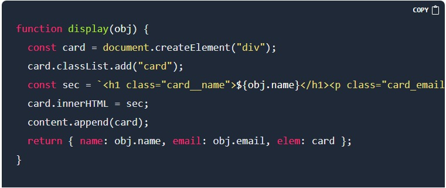

Introduction
In this article, you will learn how to build a Search Bar using HTML, CSS and JavaScript (JS) and also get a basic understanding of how DOM and fetch() work. Note, that this is not a beginner's tutorial on building a website. So you need to have a basic understanding of HTML, CSS and JS. By the end of this tutorial the website should look like this:

The Codes
For the sake of those that want to write the code without understanding it at first (of which I am one), the code will be shown first. You can copy the codes into your project folder to see it run in your browser, then you read the rest of the article to understand what you just copied. But if you really want to learn it well, a more prefered way will be to read the article while writing the functions one by one.
How it works
First of all the data in real life, we will be getting the data from API. To mimic the IRL situation we will be using https://jsonplaceholder.typicode.com/users Which returns an array of 10 objects.
Let's fetch the data from API for this we will be using the fetch() method
After fetching the response convert it to JSON using the JSON() method. then we will map the data array with the display function and store data for later use.
Now, the Display function takes the object as an argument and loads Dom with necessary information. To display we create Div with the “.card” class for that we will use createElement(). To add class we used the classList method. To add Content we have a couple of options but due to simplicity we will be using template literals and innerHTML
Now the last part We will add EventListener to the Input and Listen to the input event. For every event, we will traverse through using the forEach method and if the input value is present we will add a “.hide” class to that element.
Conclusions
Building a simple Search bar in JavaScript is an excellent, simple and fun project for beginners to start with because it helps you understand an initially complex logic used in the simplest of ways. In the next article, we will be talking about debounce and throttle methods and implementing these functions.